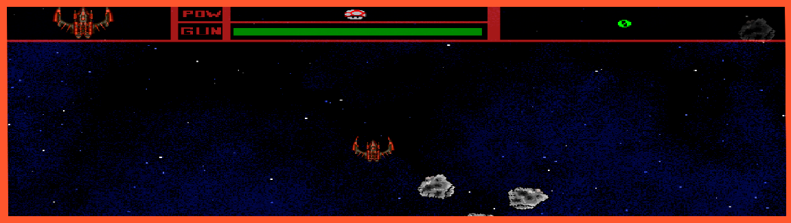

Asteroids
Este videojuego ha sido programado en C++ utilizando SDL. Es una simple recreación del famoso Asteroids con algunas modificaciones.
¿Cómo instalarlo?
Como muchos otros juegos, si de verdad quieres jugar a este o ver el código, por favor ponte en contacto conmigo por alguna de las redes sociales al final de la página.